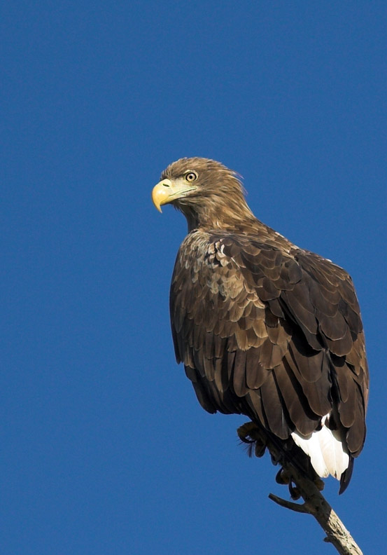
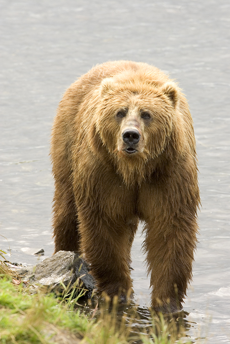

Lodjur

Lodjur (Lynx lynx) är ett kattdjur som förekommer i Europa och Asien. Lodjuret är Europas största kattdjur och fanns en gång i skogar över stora delar av den europeiska kontinenten och vidare österut till Sibirien. På Iberiska halvön förekommer istället den närbesläktade panterlon. Trots att lodjurets utbredningsområde historiskt minskat är arten fortfarande ett vitt spritt kattdjur och sammantaget betraktas arten inte som hotad av Internationella naturvårdsunionen.
Örn
Örnar är ett samlingsnamn för en grupp större rovfåglar, inom familjen hökartade rovfåglar (Accipitridae). Örnar har inte nödvändigtvis ett närmare släktskap med varandra än andra arter inom familjen Accipitridae. Därför omfattar örnar arter av mycket varierande storlek vilka lever i olika biotoper och har olika beteenden.
Björn
Björnar (Ursidae) är en familj av större rovdjur och som idag omfattar åtta arter som förekommer över stora delar av norra- och södra halvklotet. Björnar lever i Eurasien, Nord- och Sydamerika och de fanns tidigare även i norra Afrika. Arterna är främst allätare med undantag av jättepandan som huvudsakligen lever av bambuskott och isbjörnen som har kött som huvudföda.